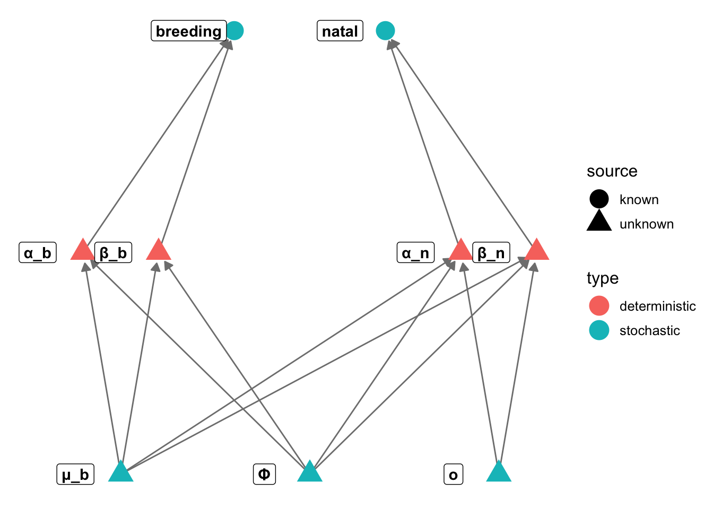
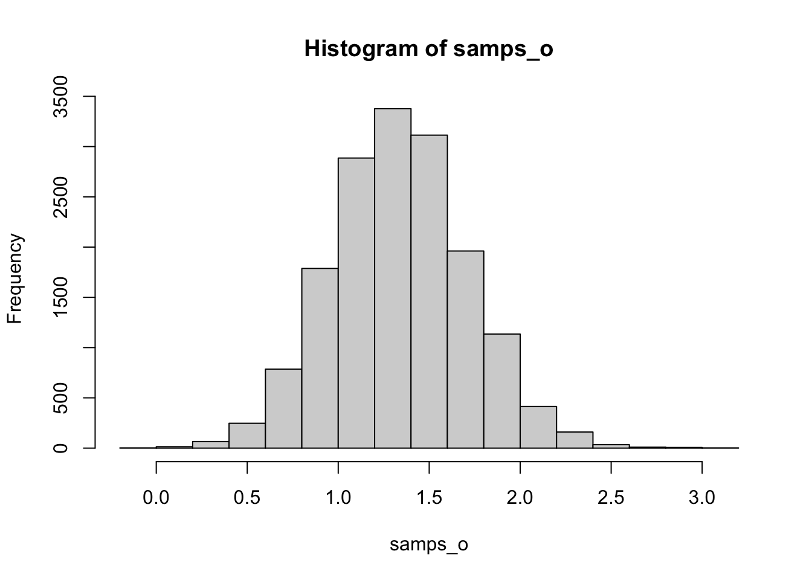

We will use a dataset (from Fandos et al. 2022) of dispersal distances of European birds. One important question is whether birds overall have greater dispersal requirements when first leaving the nest where they hatched (natal dispersal) or when dispersing as adults among different breeding sites (breeding dispersal).
The code below will download the data, and reshape it into a form that is useful for us. Note that, because we don’t have breeding and natal values for all species, we will have slightly different sample sizes for each.
library(data.table)
url = "https://zenodo.org/records/7191344/files/Table_S14_%20species_dispersal_distances_v1_0_2.csv?download=1"
disp = fread(url)
# get rid of columns we won't use, and subset to only breeding/natal dispersal
disp = disp[type %in% c("breeding", "natal"),
.(species, median, n, function_id, function_comparison, type, sex_code)]
# they fit four dispersal functions per species/type/sex
# the column function_comparison tells you how good each fit was relative to the others
# we will use it to compute the weighted mean dispersal distance across the different models
disp = disp[, .(disp_dist = weighted.mean(median, function_comparison, na.rm - TRUE),
n = sum(n, na.rm = TRUE)), by = .(species, type, sex_code)]
# we will further aggregate by sex (since the paper found little difference among sexes)
# this time with sample size as the weights
disp = disp[, .(disp_dist = weighted.mean(disp_dist, n, na.rm = TRUE)), by = .(species, type)]
# split into two datasets
breeding = disp$disp_dist[disp$type == 'breeding']
natal = disp$disp_dist[disp$type == 'natal']The original paper details many important factors that might influence dispersal distance, but we will focus on a relatively simple hypothesis: Averaging across all species, natal dispersal exceeds breeding dispersal.
Some guidance to get you thinking about the exercise:
# do a bit of manipulation to make ggplot play nicely
library(ggplot2)
ggplot(disp) + theme_minimal() +
geom_histogram(aes(x = disp_dist, fill = type), position="identity", alpha = 0.5, bins = 30)ggplot(disp) + geom_boxplot(aes(y = disp_dist, fill = type)) + theme_minimal() + ylab("Dispersal Distance (km)")It seems there is an effect. For sure the data are highly skewed!
Let’s try a paired t-test. For sure the assumptions are not met, but we will try it anyway.
t.test(natal, breeding, hypothesis = "greater")##
## Welch Two Sample t-test
##
## data: natal and breeding
## t = 4.7204, df = 209.65, p-value = 4.301e-06
## alternative hypothesis: true difference in means is not equal to 0
## 95 percent confidence interval:
## 2.703761 6.581507
## sample estimates:
## mean of x mean of y
## 7.271117 2.628483wilcox.test(natal, breeding, hypothesis = "greater")##
## Wilcoxon rank sum test with continuity correction
##
## data: natal and breeding
## W = 10594, p-value = 1.187e-12
## alternative hypothesis: true location shift is not equal to 0The non parametric test is also significant, but much less informative (we don’t get, for example, any confidence interval on the difference in means).
We could try this a few different ways. One possibility would be to build two models, one encoding a null hypothesis, that both datasets come from the same distribution with the same mean and variance, and a second where the two models have different means. Then we could use model comparison tools to decide which is better. But we don’t know how to do that yet, so we will try something even simpler!
Let’s define the mean breeding dispersal distance as \(\mu_b\). We can define the mean natal distribution in terms of a simple offset from the mean breeding distance:
\(\mu_n = \mu_b + o\)
Our hypothesis is then simply that \(o > 0\).
In terms of the generative model, our data are positive and highly skewed, so it makes sense to model this with two gamma distributions, one for each variable. Their means will be \(\mu_b\) and \(\mu_n\). We will assume a single variance, \(\phi\), shared between the two distributions.
We need some reparameterisation, because the Gamma distribution has parameters \(\alpha\) and \(\beta\), which we can relate somehow to the mean and precision of each distribution. We can find the mean and variance of the easily on Wikipedia:
\[ \begin{aligned} \mu & = \frac{\alpha}{\beta} \\ \phi & = \frac{\alpha}{\beta^2} \\ \end{aligned} \]
We can rearrange these to solve for \(\alpha\) and \(\beta\) in terms of the parameters we want to estimate:
$$ \[\begin{aligned} \alpha_b & = \frac{\mu_b^2}{\phi} \\ \beta_b & = \frac{\mu_b}{\phi} \\ \alpha_n & = \frac{(\mu_b+o)^2}{\phi} \\ \beta_n & = \frac{\mu_b+o}{\phi} \\ \end{aligned}\]$$
Finally we define the likelihood distribution:
\[ \begin{aligned} breeding & \sim \mathrm{Gamma}(\alpha_b, \beta_b) \\ natal & \sim \mathrm{Gamma}(\alpha_n, \beta_n) \\ \end{aligned} \]
library("igraph")##
## Attaching package: 'igraph'## The following objects are masked from 'package:stats':
##
## decompose, spectrum## The following object is masked from 'package:base':
##
## unionlibrary("ggnetwork")
gr = graph_from_literal(μ_b-+α_b, μ_b-+β_b, Φ-+α_b, Φ-+β_b, o-+α_n, o-+β_n, α_b-+breeding,
β_b-+breeding, α_n-+natal, β_n-+natal, μ_b-+α_n, μ_b-+β_n,
Φ-+α_n, Φ-+β_n)
V(gr)$type = c("stochastic", rep("deterministic", 2), rep("stochastic", 2), rep("deterministic", 2),
rep("stochastic", 2))
V(gr)$source = c(rep("unknown", 7), rep("known", 2))
layout = rbind(mu = c(-1, -1), alphab = c(-1.2,0), betab = c(-0.8,0), phi = c(0,-1), o = c(1,-1),
alpha_n = c(0.8,0), beta_n = c(1.2,0), breeding = c(-0.4,1), natal = c(0.4,1))
# layout = matrix(c(-1,-1, -0.5,0, 0.5,0, 1,-1, 0,1, -0.8,2, 0.8,2),
# byrow=TRUE, ncol=2)
n = ggnetwork(gr, layout=layout)
ggplot(n, aes(x = x, y = y, xend = xend, yend = yend)) +
geom_edges(colour="gray50", arrow=arrow(length = unit(6, "pt"),
type = "closed")) +
theme_blank() + geom_nodes(aes(color=type, shape = source), size=6) +
geom_nodelabel(aes(label = name), fontface = "bold", nudge_x=-0.1)
data {
int <lower = 1> n_b;
int <lower = 1> n_n;
vector [n_b] breeding;
vector [n_n] natal;
}
parameters {
real <lower = 0> mu_b;
real <lower = 0> phi;
real <lower = -mu_b> o;
}
transformed parameters {
real <lower = 0> alpha_b = mu_b^2 / phi;
real <lower = 0> beta_b = mu_b / phi;
real <lower = 0> alpha_n = (mu_b+o)^2 / phi;
real <lower = 0> beta_n = (mu_b+o) / phi;
}
model {
breeding ~ gamma(alpha_b, beta_b);
natal ~ gamma(alpha_n, beta_n);
// weak priors for the mean and variance
mu_b ~ exponential(0.1);
phi ~ exponential(0.1);
o ~ normal(0, 10);
}library(rstan)
disp_model = stan_model("stan/bird_disp.stan")bird_disp_stan = list(
n_b = length(breeding),
n_n = length(natal),
natal = natal,
breeding = breeding
)
fit = sampling(disp_model, chains = 1, refresh = 0, data = bird_disp_stan)samps_o = as.matrix(fit)[, 'o']
## pr(mu > 0)
sum(samps_o > 0) / length(samps_o)## [1] 1## credible interval
hist(samps_o)
# our posterior looks pretty symmetrical and unimodal, so we can simply make a quantile interval
interval = quantile(samps_o, c(0.25, 0.975))
cat("There is a 95% chance that the difference in means is between",
round(interval[1], 2), "and", round(interval[2], 2))## There is a 95% chance that the difference in means is between 1.04 and 2.1Our hypothesis that o > 0 is quite probable. Interestingly, our Bayesian estimate is much more conservative than the t.test.